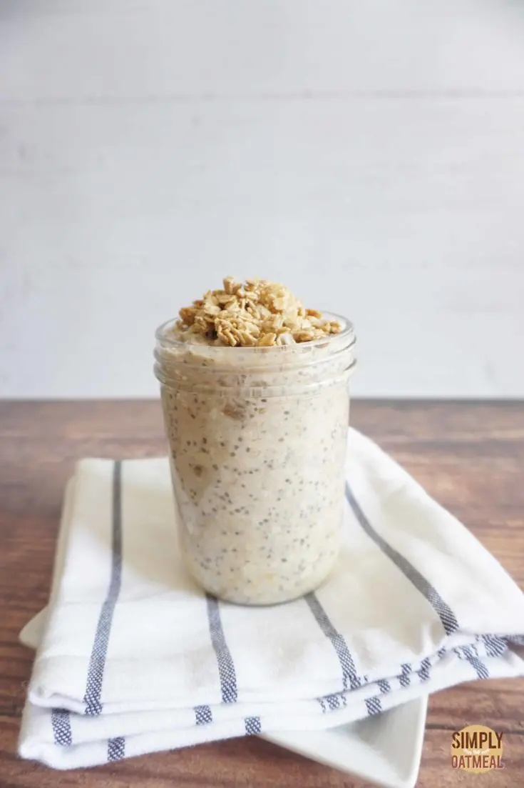

Breakfast
Banana Almond Greek Yogurt Parfait

Ingredients
300g Non-Fat Greek Yogert
1 Banana
1/4 cup Almond Milk
30g Almonds
1 tablespoon stevia
1/8 teaspoon cinnamon
Instructions
In a medium-sized cereal bowl, peel the banana and use a spoon to slice the banana directly into the bowl.
In the same bowl add the 300g of non-fat yogurt.
Add the 1/4 cup of almond milk and 30 g of Almonds.
Slightly mix together the ingredients while being careful not to smash the bananas slices.
Sprinkle the stevia and cinnamon and enjoy!